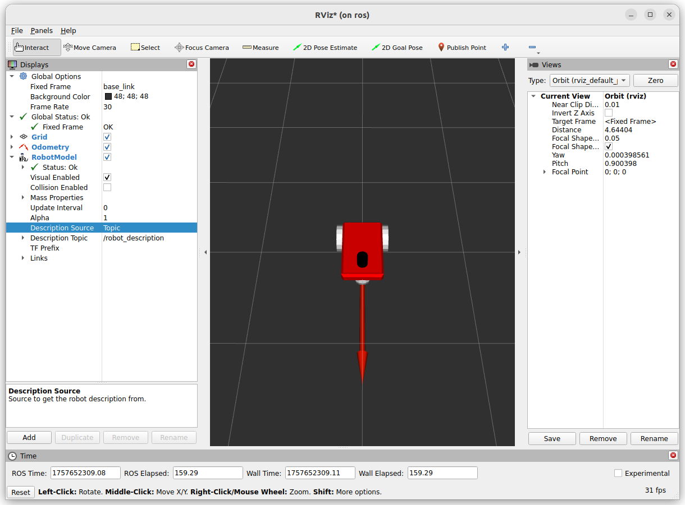
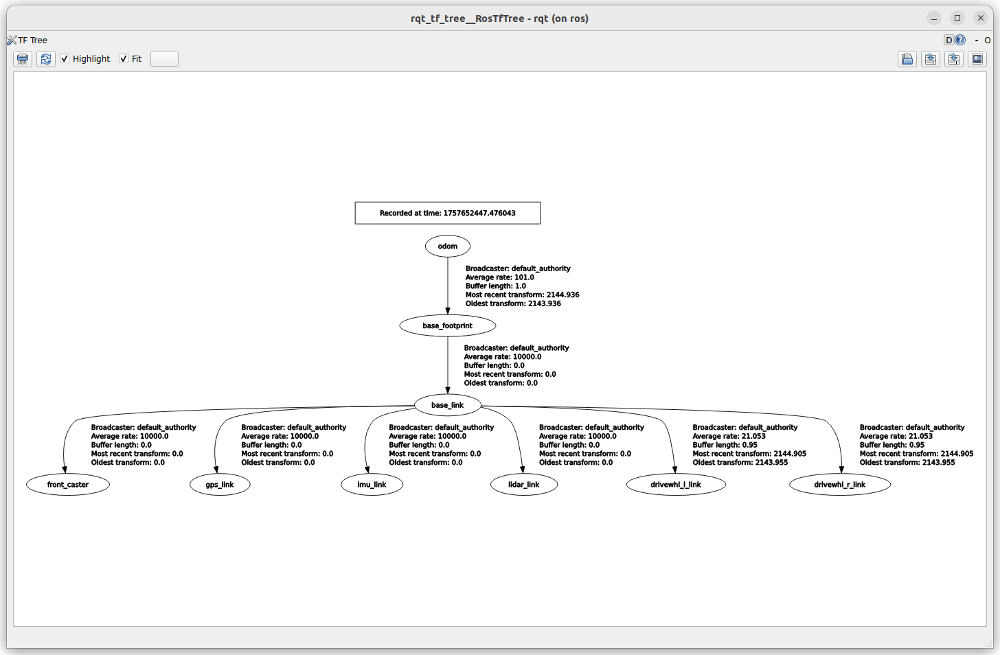
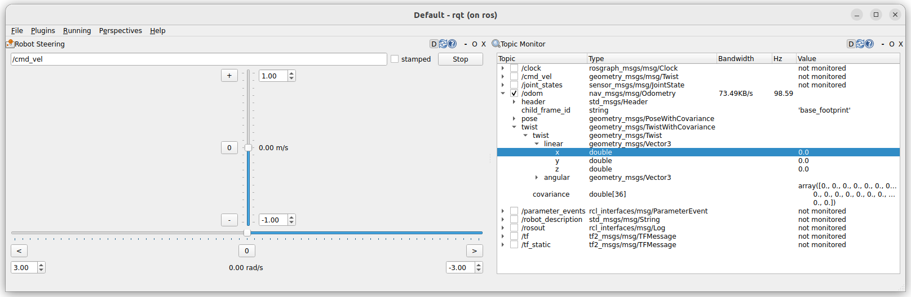

DiffDrive
Differential drive controller which can be attached to a model with any number of left and right wheels. more
Gazebo
- tf_topic: Custom topic on which this system will publish the transform from frame_id to child_frame_id. This element is optional, and the default value is /model/{name_of_model}/tf.
- frame_id: Custom frame_id field that this system will use as the origin of the odometry transform in both the
gz.msgs.Pose_V message and the gz.msgs.Odometry message. This element if optional, and the default value is {name_of_model}/odom. child_frame_id: Custom child_frame_id that this system will use as the target of the odometry trasnform in both the gz.msgs.Pose_V message and the gz.msgs.Odometry message. This element if optional, and the default value is {name_of_model}/{name_of_link}.
child_frame_id
According to REP-105 (coordinate frames for mobile platforms):
- header.frame_id = "odom" (or "map" if you have localization).
- child_frame_id = "base_link" (or base_footprint depending on your URDF).
Rule of Thumb - header.frame_id = where the robot is located (world reference). - child_frame_id = what part of the robot is moving (usually base_link).
Twist from gazebo cli
ROS
bridge file
diff-drive tf topic name
the default tf topic name is : /model/{name_of_model}/tf
we control the tf name using tf_topic tag
check the bride yaml tf part for correct mapping
Twist From ROS
Rviz

- The base of the red arrow mark the robot position
- The arrow direction display the robot heading
TF tree
The tf tree include tf from joint_states
| bridge mapping | |
|---|---|

Usgae
Rqt has nice plugin robot steering to send Twist message

The nav_msgs/Odometry message contains two main fields:
- pose: robot position + orientation in some reference frame (usually odom)
- twist: robot linear & angular velocities in body reference frame
The important detail is that the twist is expressed in the robot’s local frame (the FRD/FLU convention,
Twist
The twist message expressed in the robot's local frame (FRD/FLU) REP-103 defines the reference frame for mobile base (differential drive) as FLU (Forward, Left, Up):
- x-axis: point forward
- y-axis: point left
- z-axis: point up